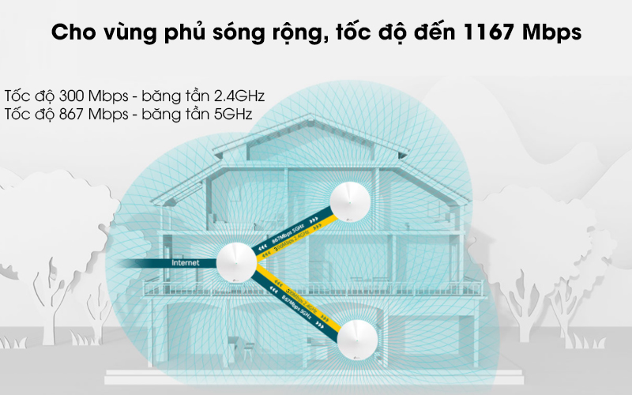
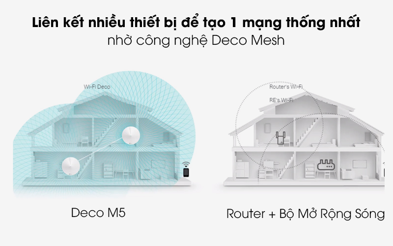
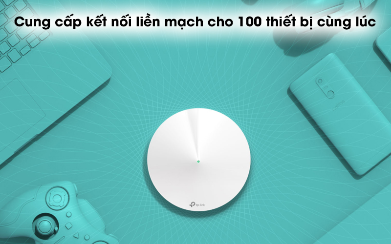
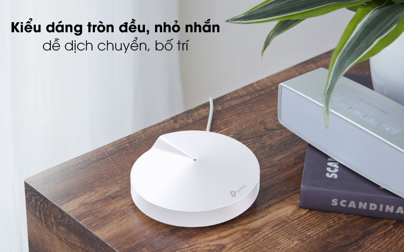
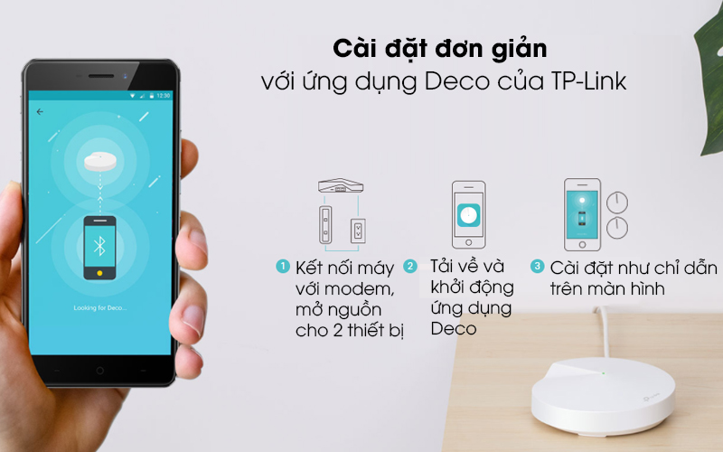
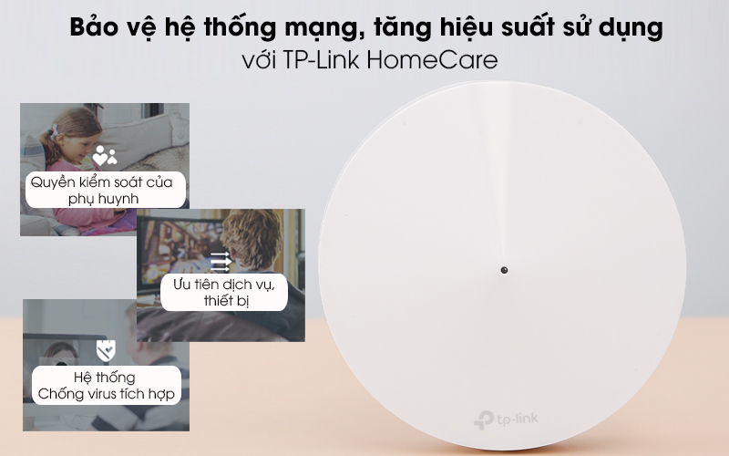

Tốc độ mạnh mẽ khi hoạt động trên 2 băng tần với tốc độ 400 Mbps/băng tần 2.4GHz và 867 Mbps/băng tần 5GHz, 4 ăng-ten ngầm. Trong khi 1 Deco M5 khi kích hoạt sẽ cho diện tích phủ Wifi khoảng 185 m2 thì với bộ 3 Deco M5, bạn sẽ được tận hưởng mạng lưới Wifi xuyên suốt với vùng phủ sóng rộng lớn, đáp ứng nhu cầu truy cập mạng trong ngôi nhà khoảng 2 tầng.
Thiết bị mạng được tạo ra để hoạt động cùng nhau nhịp nhàng, cấu thành 1 mạng Wifi đồng nhất, điện thoại của bạn sẽ tự động kết nối với thiết bị cho tốc độ cao nhất khi bạn ngồi hoặc di chuyển đến bất kỳ vị trí nào trong nhà của mình, mang đến trải nghiệm internet tiện ích hơn bao giờ hết.
Nhờ có công nghệ Wi-Fi 802.11ac, router cho phép kết nối cùng 1 lúc đến 100 thiết bị, với tốc độ nhanh hơn 3 lần so với router thế hệ trước. Công nghệ Beamforming tập trung tín hiệu đến máy khách, mở rộng vùng phủ sóng, MU-MIMO tăng độ ổn định cho kết nối, cho bạn thoải mái xem phim khi mọi người xung quanh đang lướt web, chơi game,...
Deco M5 có dạng hình tròn gọn gàng, chọn điểm bố trí linh hoạt tùy thiết kế nội thất trong ngôi nhà, văn phòng của bạn, thiết bị mạng TP-Link có gam màu trắng dễ hòa hợp với mọi phong cách kiến trúc.
Các bước cài đặt Deco M5 mà bạn cần thực hiện: - Bước 1: Kết nối máy với modem, gắn điện và mở nguồn cho 2 thiết bị. - Bước 2: Tải về điện thoại và khởi động ứng dụng Deco. - Bước 3: Thực hiện cài đặt theo hướng dẫn trên màn hình để cấu thành hệ thống Deco của mình.
Tính năng này đảm bảo an toàn cao độ cho hệ thống mạng gia đình với cơ sở dữ liệu được cập nhật thường xuyên từ Trend Micro. TP-Link HomeCare có thiết lập Quyền kiểm soát của phụ huynh cho bạn tiện chọn thời gian truy cập, chặn các nội dung theo hồ sơ phân loại tạo ra từng thành viên trong nhà, hệ thống Chống virus tích hợp bảo vệ các thiết bị kết nối, có cơ chế ưu tiên thiết bị, dịch vụ, đảm bảo chất lượng dịch vụ tốt nhất.
Tốc độ:
Băng tần:
Số ăng-ten:
Truy cập tối đa:
Mật độ phủ sóng (bán kính):
Thương hiệu của:
Sản xuất tại:
Hãng